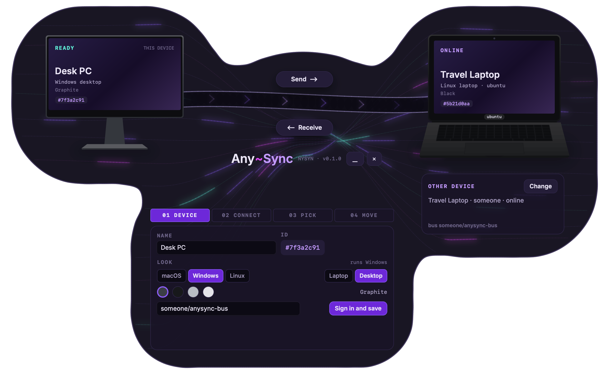

Each device draws itself
On the Device tab you name this computer and choose how it is drawn: a Mac model, a Windows desktop or laptop, or a Linux machine with its distro's name on a small badge. All drawings are original shapes, no company logos.

The devices on your account
Find devices on this account lists every computer registered in your bus repo, whatever it runs. Pick one, choose to send or to receive, and the other device shows a request its owner approves or declines.

Offered by what fits
The sender scans what it has. The receiver sees it as a tree grouped by kind, and each item says where it lands on this system, or that it has no place here. Ticking a group ticks everything in it.

Straight across, and it resumes
Only the picks travel, device to device over your network, as an authenticated XChaCha20-Poly1305 stream. A minute without a byte counts as a cut, and the receiver asks again for what has not arrived.

A brief your agent can act on
Each item lands where this system keeps it, and what was there is kept as .before-anysync. Then the receiver writes GOAL.md: what landed where, the problems, the old home's paths to rewrite and the lists of tools to install. On a Mac it also writes a preflight script for Apple's command line tools, Homebrew and Node.